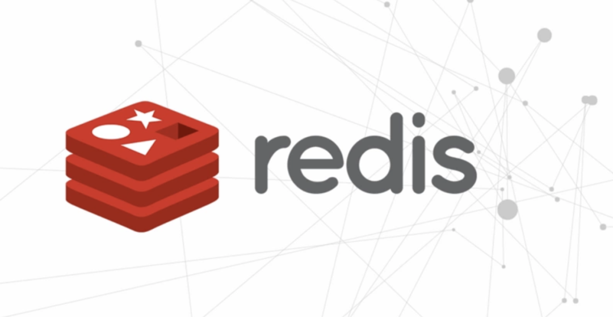
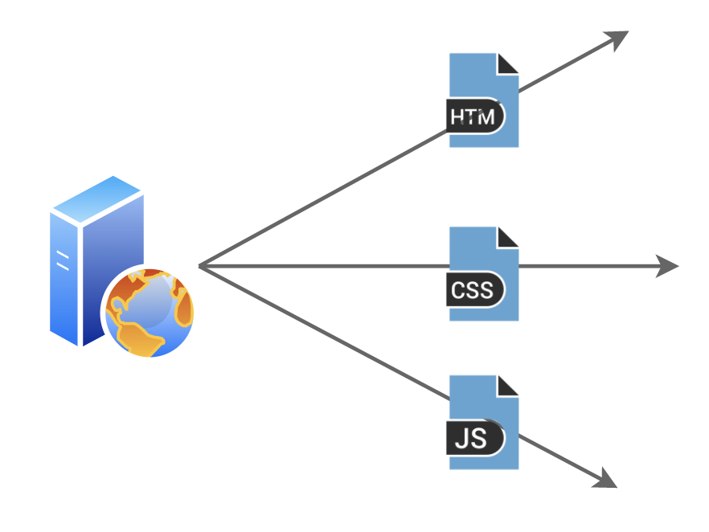
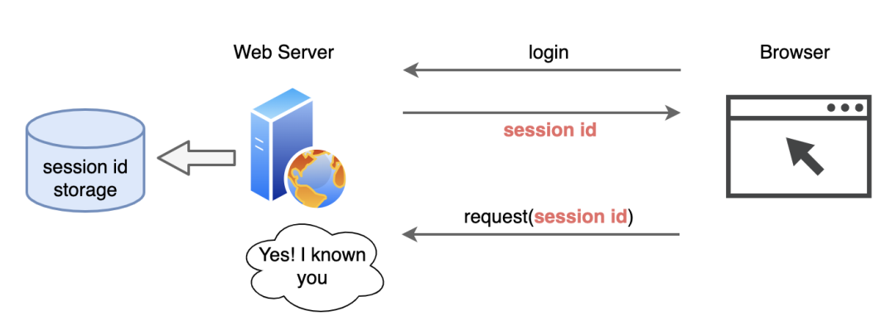
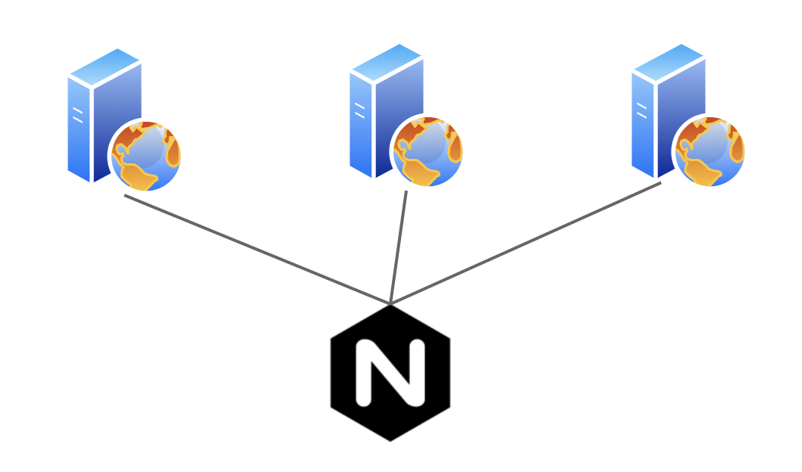
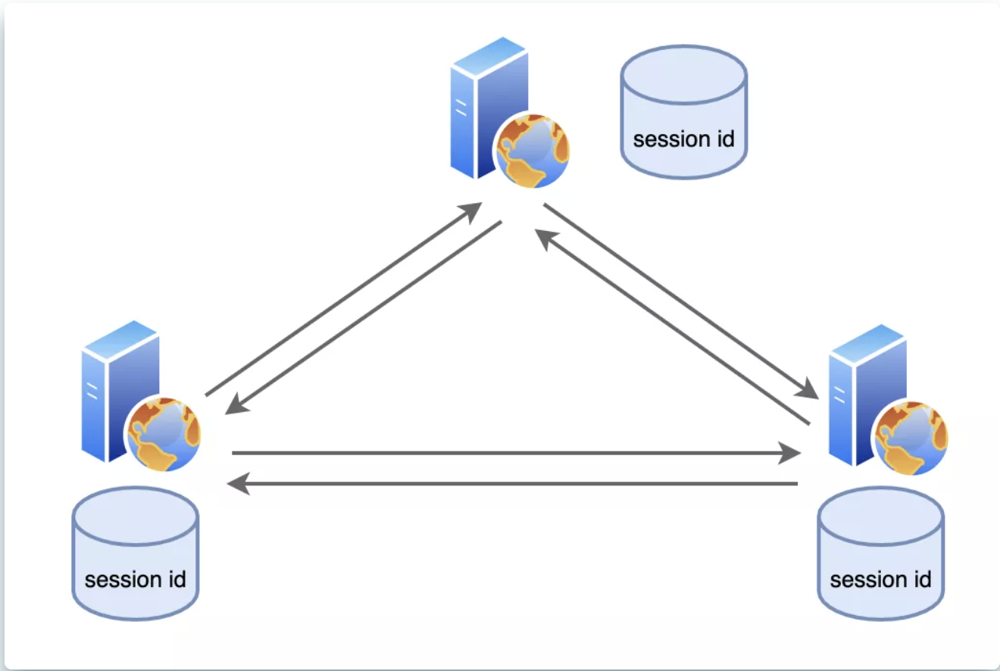
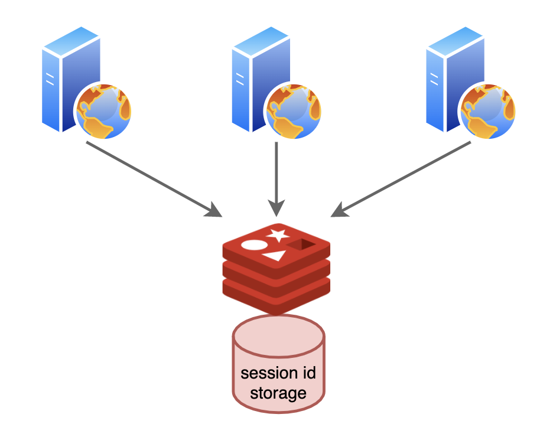
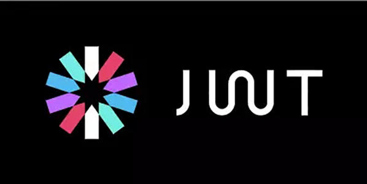
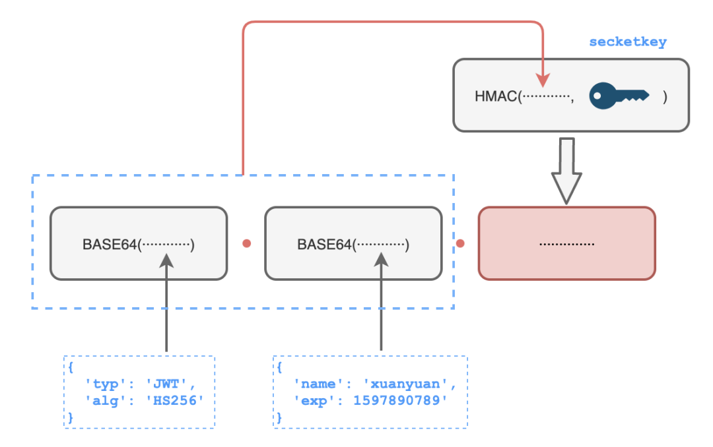
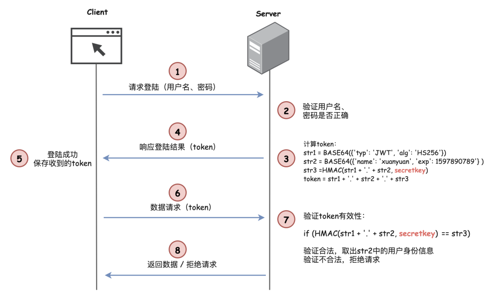

# 深夜，我偷听到程序员要对session下手
# 我是一个Web服务器
我是一个Web服务器，我的工作是给人类提供上网服务，我每天要为数以万计的人提供网页浏览服务。
已经是深夜了，我还在和手下几个兄弟为了一件事紧张讨论着。
“老大，现在咱们每天处理的请求越来越多了，session同步的问题不能再拖了，必须想个办法”
“二哥说的是啊，老大，不能再拖了”
“老二，老三，咱们是一个集群，你们说的问题我不是不知道，我昨天听程序员们在讨论说要给我们接入一个叫Redis的家伙，相信这一问题很快就能得到解决啦，大家再忍忍。”
“Redis，他是谁，什么来头？怎么没听过这号人物”
“我也没见过，等等看吧”
# session-cookie时代
到底是什么问题，让我们兄弟几个如此着急上火？事情还得从多年以前说起······
那时候，这俩兄弟还没来，就我一个web服务器，每天处理的不过是一些静态资源文件，像HTML、CSS、JS、图片等等，日子过的清闲自在。
日子一天天过着，互联网却悄然发生着变化。除了静态网页之外，可以动态交互的网络应用开始如雨后春笋般涌现，像各种各样的论坛啊，购物网站啊之类的。
这家公司的老板也不例外，招了一帮程序员要搞一套支持动态网页交互的网站出来。
以往的时候，我只需要按照HTTP协议的规范处理请求就完事儿了。不过动态交互应用出现后，我还得记住每一个请求背后的用户是谁，要不然就张冠李戴，全乱套了。
为了解决这个问题，程序员们想出了一个叫session的办法：
浏览器登陆以后，我就分配一个session id，表示一个会话，然后返回给浏览器，让它保存着。后续再来请求的时候，就把它给带上，我就能知道是谁啦！
还别说，这办法还是挺管用的，成功解决了用户身份识别的问题，这一用就是好几年。
不过，互联网的发展实在是太快了，用户量蹭蹭上涨，而我却发起了愁。
原先用户量少的时候，session id管理起来倒也简单，现在用户越来越多，对应的session id数量也与日俱增，我有点不堪重负了。
终于前不久，公司对web服务器进行了扩展，给我找来了两个小弟，还专门添置了一个nginx来进行负载均衡，这一下我们变成了3台web服务器组成的小集群了。
我的工作一下轻松了许多，两位小兄弟为了分担了不少。我原以为以后的日子要好过一些了，可没想到，两位小兄弟的加入却引入了新的问题。
原先的session id虽然很多，我一个人累是累点，但是方便管理啊！现在人手是增加了，可是这个session id的管理问题却变得复杂起来。
因为咱们现在是个集群，请求如果发到我这，我给登记了session id，但下一次请求说不定就发到老二那里，一会儿又发到老三那里，这个就说不准了，这样我们几个手头的信息不一致，就会出现一些异常情况，用户估计要破口大骂：这什么辣鸡网站？
后来我们跟nginx商量了一下，让他同一个用户来的请求都发给我们固定的一个人，这才稳住了局面。
不过好景不长，后面我们三兄弟都相继出现过宕机的情况，这时候nginx还是得把请求交给还在工作的兄弟，原来的问题就又出现了！
我们几个逼急了，商量了一下，干脆大家伙来同步session id的信息好了，有新增、失效的情况都给其他几个兄弟招呼一下，大家都管理一份，这样就不会出现不一致的问题了。
 搞了半天，又变成以前一个人管理所有session id的情况了，不仅如此，还要抽出时间和几位兄弟同步，把session id搬来搬去，工作量不减反增了。
就这样艰难的过了一段日子，大家都怨声载道，所以有了开头的那一番讨论。
这一次，希望这位新来的叫Redis的伙伴能拯救我们。
# 独立缓存——Redis
过了几天，总算把这个叫Redis的小伙伴给盼来了！
这小子看起来特别精神，了解清楚情况后，告诉我们说：“三位老哥，以后这session id都统一存在我这里吧，你们别各自保存了，这不是各位的擅长”
“你行吗？”，老二看着不太相信他的话，一脸不屑。
“行不行，试试不就知道了吗？”
接下来，我们听从了Redis的建议，不再保存这烦人的session id，全部一股脑儿交给了他，我们需要的时候再找他获取。
你还别说，这小子个子不大，本事不小，读写速度都特快，让我们头疼的问题总算是解决了！
# Token时代
几个月后的一天···
“听说了吗？程序员们又要更改session id的存储方案了”，这一天，老二神神秘秘的说到。
“不对不对，我听到的版本是以后不用session id了，要变天了！”，老三也凑了上来。
一旁的redis老哥一听不乐意了，“咋的？是嫌我干的不好吗？”
我也赶紧催促，“你俩就别卖关子了，听到了什么，快说说”
老三示意大家围拢一些，小声说到：“我上次听两个程序员在议论，不知道他们在哪里学来了一套叫JWT（JSON Web Token） 的技术，硬说让我们来管理保存session id负担太重了，以后不保存了！还说，还说···”
“还说啥，你倒是说啊！”
“还说，Redis也不是万能的，也有崩溃的风险，一崩溃就全完了，所以要革新技术”，老三继续说到。
Redis一听更着急上火了，“我工作这么久以来，从没有撂过挑子吧，怎么能这么说我呢？再不行我也可以像你们搞个集群嘛”
“Redis老弟你先别急。唉，老三，这不保存session id，以后怎么鉴别用户呢？你有没有听到他们怎么说的？”
“听他们说，没有session id，但是换了一个token，用它来识别用户”
老二一听不以为意：“换了个名字，换汤不换药嘛！咱们还不是要保存token，才能匹配谁是谁”
老三摇了摇头：“不是的，这可不只是改了个名字那么简单！这个token是由三部分构成，就像这样：”
“你们看，第一部分是JWT的基本信息，然后把用户的身份信息放在第二部分，接着和第一部分合在一起做一个计算，计算的时候加入了一个只有我们才知道的密钥 secretkey，计算结果作为第三部分。最后三部分拼在一起作为最终的token发送给客户端保存着···”
还没等老三说完，老二点出了其中的关键：“我知道了，后面咱们再收到这个token的时候，就可以通过同样的算法验证前面两部分的结果和第三部分是不是相同，就知道这个token是不是伪造的啦！因为密钥只有我们知道，别人没办法伪造出一个token的！最后确认有效之后，再取第二部分的用户身份信息，就知道这是谁了！”
听完他们的分析，我和Redis老兄都默默的点了点头，“有点意思啊，这样一来，咱们确实不用存了！不过现在咱们几个工作配合的也挺好的，他们费这么大劲是为了什么啊？”
“我猜他们是想节约开支，把Redis老哥给裁掉！”，老二说到。
老三摇了摇头，“依我看，八成他们是想展示技术给领导看，这不又快到职级晋升答辩了，他们想搞事情！唉，老大，这事你怎么看？”
“我啊，我···”
朋友们，你怎么看？session-cookie和JWT，你更倾向谁？
文章来源：https://mp.weixin.qq.com/s/UQ1gUC5IIYmAQjVkaGessQ